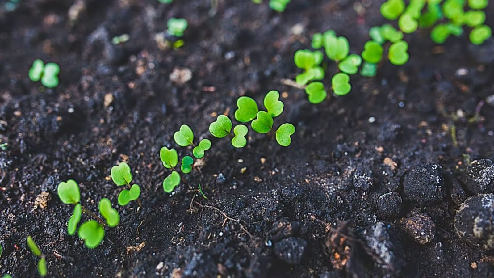
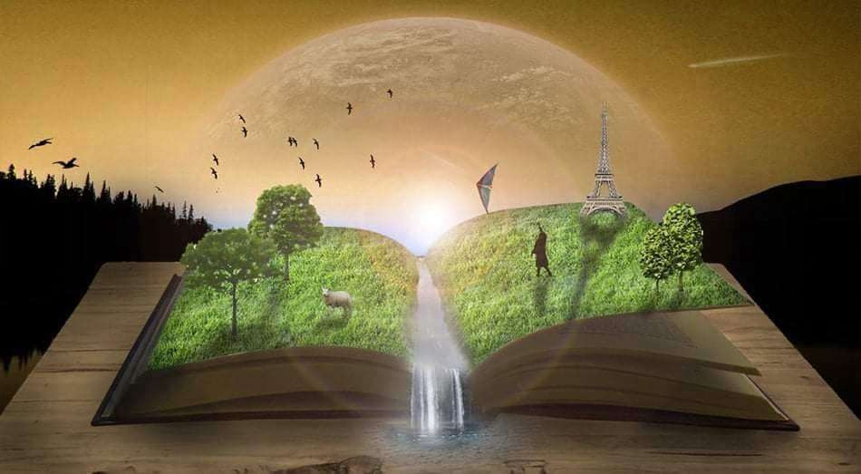

Unsere Entscheidung
Die erste Entscheidung
Waldschutz
Der Wald bietet Tausenden von Tierarten Schutz und ist Quelle sauberen Wassers und frischer Luft für uns alle. Indem wir den Wald vor illegalem Holzeinschlag und Bränden schützen, sichern wir unsere Heimat und das Recht auf ein gesundes Leben. Es ist unsere gemeinsame Verantwortung, das zu bewahren, was die Natur über Jahrhunderte geschaffen hat.

Die zweite Entscheidung
Rationelle Nutzung der Ressourcen
Wir verbrauchen die Ressourcen unseres Planeten 1,7 Mal schneller, als er sie regenerieren kann. Der unkontrollierte Verbrauch von Energie, Wasser und Rohstoffen führt zu einer irreversiblen Erschöpfung der Bodenschätze und zur Anhäufung von Millionen Tonnen nicht recycelbarer Abfälle. Eine rationelle Nutzung ist der einzige Weg, um den ökologischen Kollaps zu stoppen, der durch unsere Kultur des übermäßigen Konsums verursacht wird.

Die dritte Entscheidung
Schutz der Artenvielfalt
Heute ist die Aussterberate von Arten aufgrund menschlicher Aktivitäten 1000 Mal höher als unter natürlichen Bedingungen. Das Verschwinden auch nur eines Glieds in der Ökologie löst eine Kettenreaktion aus, die die Ernährungssicherheit und Nachhaltigkeit des gesamten Planeten gefährdet. Der Schutz der biologischen Vielfalt bedeutet nicht nur die Rettung einzelner Tiere, sondern auch die Erhaltung des genetischen Codes der Erde, der nicht wiederhergestellt werden kann.

Die vierte Entscheidung
Sorgsamer Umgang mit Böden
Die fruchtbare Bodenschicht bildet sich über Jahrtausende, kann jedoch durch unsachgemäße Bewirtschaftung innerhalb weniger Jahre zerstört werden. Durch die Einführung von ökologischem Landbau, Fruchtfolge und den Verzicht auf aggressive Chemikalien kann das Mikrobiom des Bodens erhalten werden. Gesunder Boden bedeutet nicht nur reichhaltige Ernten, sondern auch eine effektive Kohlenstoffbindung, die dazu beiträgt, die globale Erwärmung einzudämmen.

Die fünfte Entscheidung
Umwelterziehung
Wissen ist der erste Schritt zur Veränderung. Umweltbildung prägt ein neues Denken, in dem verantwortungsvoller Konsum und Respekt vor der Natur zur Normalität werden. Indem wir Kindern und Erwachsenen die Grundlagen der Ökologie vermitteln, schaffen wir eine Gesellschaft, die in der Lage ist, die richtigen Entscheidungen zum Erhalt unseres Planeten zu treffen.
